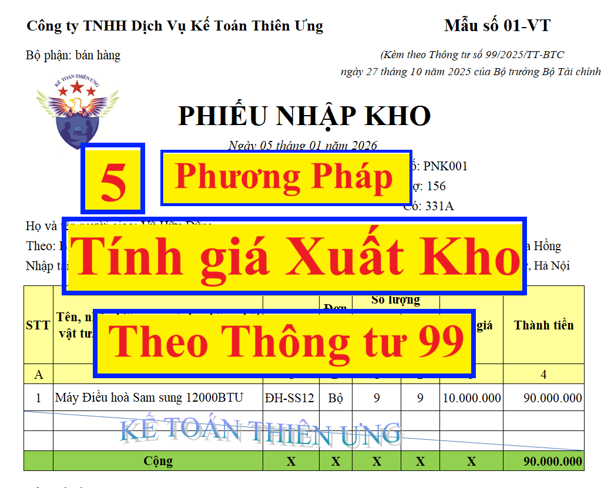

Hướng dẫn cách tính, xác định đơn giá xuất kho của hàng tồn kho theo Thông tư 99/2025/TT-BTC hướng dẫn chế độ kế toán doanh nghiệp có hiệu lực từ ngày 01/01/2026
Theo nguyên tắc kế toán hàng tồn kho tại Thông tư 99/2025/TT-BTC thì khi xác định giá trị hàng xuất kho và tồn kho, doanh nghiệp áp dụng theo một trong các phương pháp sau:
1. Phương pháp tính theo giá đích danh: Phương pháp này được áp dụng dựa trên giá trị thực tế của từng thứ vật tư, hàng hóa mua vào, từng thứ sản phẩm sản xuất ra nên chỉ áp dụng cho các doanh nghiệp có ít mặt hàng hoặc mặt hàng ổn định và nhận diện được.
Chi tiết cách tính đơn giá xuất kho theo phương pháp đích danh thì Công ty đào tạo Kế Toán Diệu Tâm mời các bạn xem tại đây:
2. Phương pháp bình quân gia quyền: Theo phương pháp này, giá trị của từng mặt hàng tồn kho được tính theo giá trị trung bình của từng mặt hàng tồn kho đầu kỳ và giá trị từng mặt hàng tồn kho được mua hoặc sản xuất trong kỳ. Giá trị trung bình có thể được tính theo từng kỳ hoặc sau từng lô hàng nhập về, phụ thuộc vào điều kiện cụ thể của mỗi doanh nghiệp.
Chi tiết cách tính đơn giá xuất kho theo phương pháp bình quân gia quyền thì Công ty đào tạo Kế Toán Diệu Tâm mời các bạn xem tại đây:
Cách tính giá xuất kho theo PP Bình Quân Gia Quyền
Cách tính giá xuất kho theo PP Bình Quân Gia Quyền
3. Phương pháp nhập trước, xuất trước (FIFO): Phương pháp này được áp dụng dựa trên giả định là giá trị hàng tồn kho được mua hoặc được sản xuất trước thì được xuất trước nên giá trị hàng tồn kho còn lại cuối kỳ là giá trị hàng tồn kho được mua hoặc sản xuất gần thời điểm cuối kỳ. Theo phương pháp này thì giá trị hàng xuất kho được tính theo giá của lô hàng nhập kho ở thời điểm đầu kỳ hoặc gần đầu kỳ, giá trị của hàng tồn kho cuối kỳ được tính theo giá của hàng nhập kho ở thời điểm cuối kỳ hoặc gần cuối kỳ.
Chi tiết cách tính đơn giá xuất kho theo phương pháp nhập trước, xuất trước thì Công ty đào tạo Kế Toán Diệu Tâm mời các bạn xem tại đây:
Cách tính giá xuất kho theo PP Nhập trước - Xuất trước
Cách tính giá xuất kho theo PP Nhập trước - Xuất trước
4. Phương pháp giá bán lẻ được dùng trong ngành bán lẻ (ví dụ như các đơn vị kinh doanh siêu thị hoặc tương tự), với đặc thù là hàng tồn kho có số lượng lớn, các mặt hàng thay đổi nhanh chóng và nhiều mặt hàng có lợi nhuận biên tương tự hoặc không thể sử dụng các phương pháp tính giá khác. Giá xuất hàng tồn kho được xác định bằng cách lấy giá bán của hàng tồn kho trừ (-) lợi nhuận biên theo tỷ lệ phần trăm hợp lý. Tỷ lệ phần trăm hợp lý được sử dụng có tính đến các mặt hàng đó bị hạ giá xuống thấp hơn giá bán ban đầu của nó. Thông thường mỗi bộ phận bán lẻ sẽ sử dụng một tỷ lệ phần trăm bình quân riêng.
5. Phương pháp chi phí chuẩn (có thể áp dụng cho các doanh nghiệp sản xuất) được tính theo mức sử dụng bình thường của nguyên vật liệu và công cụ dụng cụ, nhân công, hiệu quả và hiệu suất sử dụng chi phí. Các yếu tố này thường xuyên được xem xét lại và nếu cần thiết, sẽ được điều chỉnh theo các điều kiện hiện tại.
Doanh nghiệp căn cứ vào đặc điểm, tính chất, số lượng, chủng loại của từng mặt hàng tồn kho cũng như yêu cầu quản lý của doanh nghiệp để lựa chọn phương pháp xác định giá trị xuất kho và tồn kho cuối kỳ của từng mặt hàng tồn kho cho phù hợp và phải được áp dụng nhất quán giữa các kỳ kế toán, trừ khi có sự thay đổi chính sách kế toán.
====================================
Lưu ý:
====================================

Lưu ý:
Doanh nghiệp căn cứ vào đặc điểm, tính chất, số lượng, chủng loại của từng mặt hàng tồn kho cũng như yêu cầu quản lý và điều kiện vật chất để xác định số lượng và giá trị hàng xuất kho theo từng lần phát sinh hoặc tính trên cơ sở số lượng và giá trị hàng tồn kho cuối kỳ cho phù hợp và phải được áp dụng nhất quán giữa các kỳ kế toán, trừ khi có sự thay đổi chính sách kế toán. Trong đó:
a) Trường hợp doanh nghiệp xác định số lượng và tính giá trị hàng xuất kho theo từng lần phát sinh: Doanh nghiệp theo dõi và phản ánh thường xuyên, liên tục, có hệ thống tình hình nhập, xuất, tồn hàng tồn kho trên sổ kế toán nên số lượng và giá trị hàng tồn kho trên sổ kế toán có thể được xác định ở bất kỳ thời điểm nào trong kỳ kế toán.
Tại thời điểm kết thúc kỳ kế toán, doanh nghiệp căn cứ vào số liệu kiểm kê thực tế hàng tồn kho để so sánh, đối chiếu với số liệu hàng tồn kho trên sổ kế toán. Về nguyên tắc, số lượng tồn kho thực tế phải luôn bằng số lượng tồn kho trên sổ kế toán. Nếu có chênh lệch phải truy tìm nguyên nhân và có giải pháp xử lý kịp thời. Phương pháp này thường áp dụng cho các doanh nghiệp sản xuất (công nghiệp, xây lắp...) và các doanh nghiệp thương mại kinh doanh các mặt hàng có giá trị lớn như máy móc, thiết bị, hàng có kỹ thuật, chất lượng cao...
b) Trường hợp doanh nghiệp xác định số lượng và giá trị hàng xuất kho trên cơ sở số lượng và giá trị hàng tồn kho cuối kỳ: Căn cứ vào kết quả kiểm kê thực tế để phản ánh số lượng và giá trị hàng tồn kho cuối kỳ trên sổ kế toán và từ đó tính số lượng và giá trị của hàng tồn kho đã xuất trong kỳ theo công thức:
| Số lượng/Trị giá hàng xuất kho trong kỳ | = | Số lượng/Trị giá hàng tồn kho đầu kỳ | + | Tổng số lượng/trị giá hàng nhập kho trong kỳ | - | Số lượng/Trị giá hàng tồn kho cuối kỳ |
- Tùy theo đặc điểm hàng tồn kho và yêu cầu quản lý của doanh nghiệp, công tác kiểm kê hàng tồn kho được tiến hành định kỳ hoặc cuối mỗi kỳ kế toán để xác định số lượng/trị giá hàng tồn kho thực tế từ đó xác định số lượng/trị giá hàng tồn kho xuất kho trong kỳ (dùng cho sản xuất, xuất bán,...).
- Phương pháp này thường áp dụng ở các doanh nghiệp có nhiều chủng loại hàng tồn kho với quy cách, mẫu mã rất khác nhau, giá trị thấp, hàng tồn kho xuất dùng hoặc xuất bán thường xuyên (cửa hàng bán lẻ...). Phương pháp này có ưu điểm là đơn giản, giảm nhẹ khối lượng công việc hạch toán. Nhưng độ chính xác về số lượng và giá trị hàng tồn kho xuất dùng, xuất bán bị ảnh hưởng bởi chất lượng công tác quản lý tại kho, quầy, bến bãi.
===========================================
Hàng tồn kho của doanh nghiệp là những tài sản được mua vào để sản xuất hoặc để bán trong kỳ sản xuất, kinh doanh thông thường, gồm:
- Hàng mua đang đi đường;
- Nguyên liệu, vật liệu;
- Công cụ, dụng cụ;
- Sản phẩm dở dang;
- Sản phẩm (thành phẩm và bán thành phẩm);
- Hàng hóa;
- Hàng gửi đi bán;
- Nguyên liệu, vật tư tại kho bảo thuế của doanh nghiệp.
Chi tiết về cách bạn xem tại đây:
Chi tiết về cách bạn xem tại đây:
Chi tiết về cách bạn xem tại đây:
Chi tiết về cách bạn xem tại đây:
Chi tiết về cách bạn xem tại đây:
Chi tiết về cách bạn xem tại đây:
Chi tiết về cách bạn xem tại đây:
Chi về cách bạn xem tại đây: